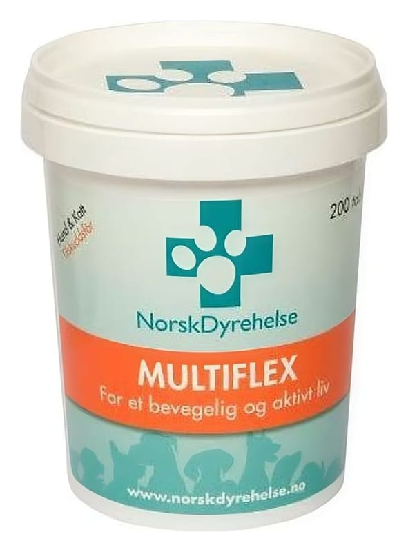

Multiflex 200/8 mg SR Kapsül, 14 Adet

Ne için kullanılır
KT · Bölüm 1MULTİFLEX SR kapsül gövde şeffaf sarı, kapak opak sarı renkli kapsül içinde beyaz küreler ve sarı renkli toz şeklindedir. MULTİFLEX SR, 10 ve 20 SR kapsül içeren, PVC / PVDC / Alüminyum Folyo ambalajlarda piyasaya sunulmaktadır. MULTİFLEX SR, flurbiprofen ve tiyokolşikosid adlı etkin maddeleri içeren bir ilaçtır. Flurbiprofen ve tiyokolşikosid çeşitli ağrıları ortadan kaldırmak ya da hafifletmek amacı ile kullanılan steroid olmayan antiinflamatuvar ilaçlar (NSAİ) olarak adlandırılan grupta yer alır. MULTİFLEX SR, osteoartrit (kireçlenme), vertebral kolonun ağrılı sendromları, eklem dışı romatizmal ağrılı kas kasılmalarının semptomatik (belirtilerine yönelik) tedavisinde, travma c (yaralanma) sonrası ve ameliyat sonrası ağrı tedavisinde kullanılır.